library(tidyverse)
athletes <- readRDS(file = here::here("raw-data", "athletes.rds"))
world_coordinates <- readRDS(
file = here::here("raw-data", "world-coordinates.rds")
)
medal_counts <- athletes %>%
filter(Medal == "Gold") %>%
group_by(Region) %>%
count(Medal)
medal_countries <- world_coordinates %>%
rename("Region" = region) %>%
left_join(medal_counts)Plotting
Note
This chapter is optional.
CautionPrevious code
We now want to take a closer look at how ggplot2 works. We already had a quick glimpse at it: Plots are build from different layers to create complex output. There are endless possibilities for different plot types, look at the R graph gallery for some inspiration and code.
First, let’s plot a relatively simple plot to get you familiar with how ggplot2 works. After that, we will use the preparation we have done in the last chapters to plot the number of gold medals each country has won over the years on a world map, which gets slightly more complex.
First plot
For this plot, we want to find the country with the most medal winners for each sport. The preparation is pretty similar to what we have done before:
best_by_sport <- athletes %>%
## Get all gold medalists
filter(Medal == "Gold") %>%
## Group them by sport and region
group_by(Sport, Region) %>%
## count the number of medals each country has per sport category
count(Medal) %>%
## Now only group by sport, so we can extract the maximum medal row by sport, and not by sport and country
group_by(Sport) %>%
## Extract the country with the most medals
slice(which.max(n))
head(best_by_sport)# A tibble: 6 × 4
# Groups: Sport [6]
Sport Region Medal n
<chr> <chr> <chr> <int>
1 Aeronautics Switzerland Gold 1
2 Alpine Skiing Austria Gold 34
3 Alpinism UK Gold 12
4 Archery South Korea Gold 49
5 Art Competitions Germany Gold 9
6 Athletics USA Gold 542ggplot()
In general, a ggplot starts with the ggplot() function. In it we define the data we want to use, and some aesthetics. The ggplot() function then draws our (currently still empty) plotting area, with the defined axes (see next section).
aes()
Aesthetics set parameters dependent on the data. In most cases, we will define our x and y axis here. We can also group data together by groups found in a column. If we want the data to have a different color, form, filling etc. depending on values in a column, we can define that here as well (we will look at that later on).
p <- ggplot(
data = best_by_sport,
aes(
x = Sport,
y = n
)
)
p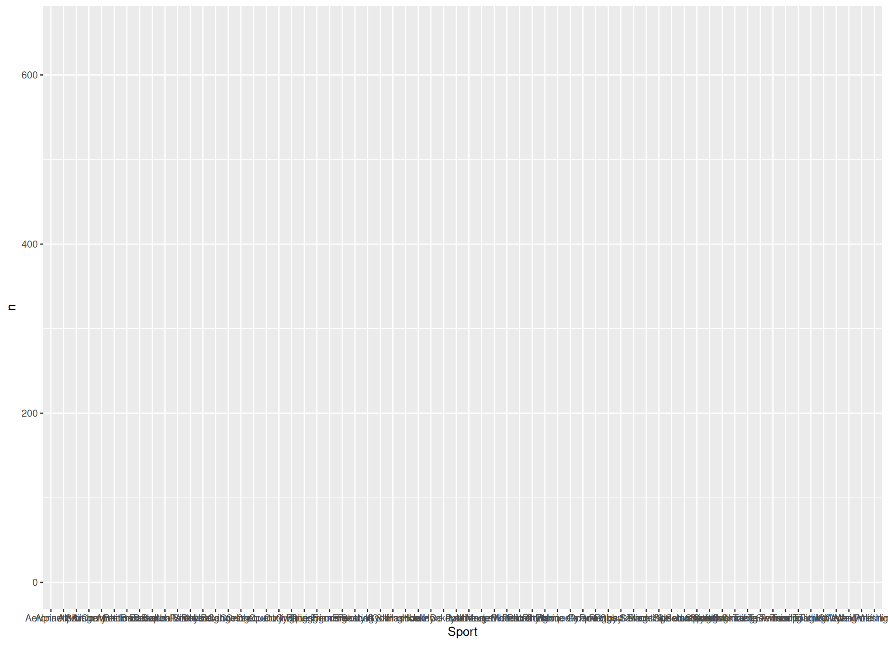
In this case, the sport is plotted on the x axis and the number of gold medals (n) on the y axis.
geom_()
The geoms do the actual plotting. For example, if we want a barplot:
p +
geom_col()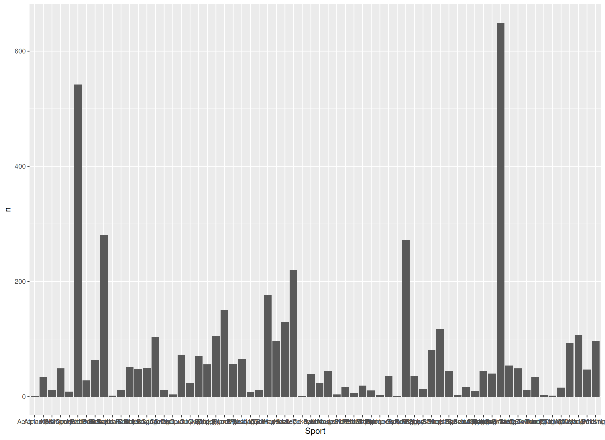
Looking pretty boring, right? Let’s give each country another color by defining the fill aesthetic. Also, lets order the x axis depending on the number of gold medalists:
p <- p +
geom_col(aes(fill = Region, x = reorder(Sport, n)))
p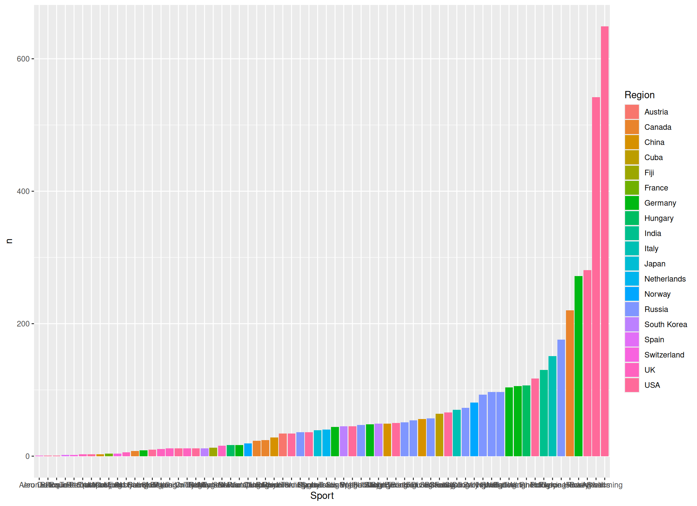
Correct! We can define the aesthetics also within the geom_() functions. In this case they will only be used for that specific function, and not for the whole plot (which would be the case if we had defined the fill aesthetic in the ggplot() function):
Global vs local aes()
To illustrate this, we use the colour aesthetic instead of fill:
p_2 <- p +
geom_col(aes(colour = Region, x = reorder(Sport, n)))
p_2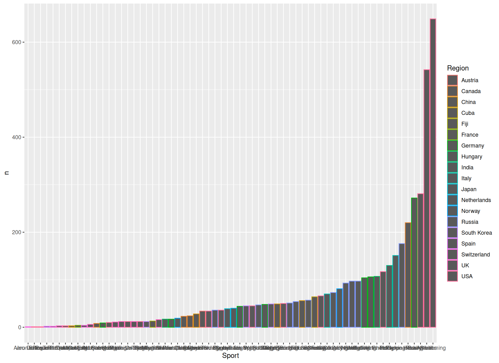
Now let’s add some points:
p_2 +
geom_point()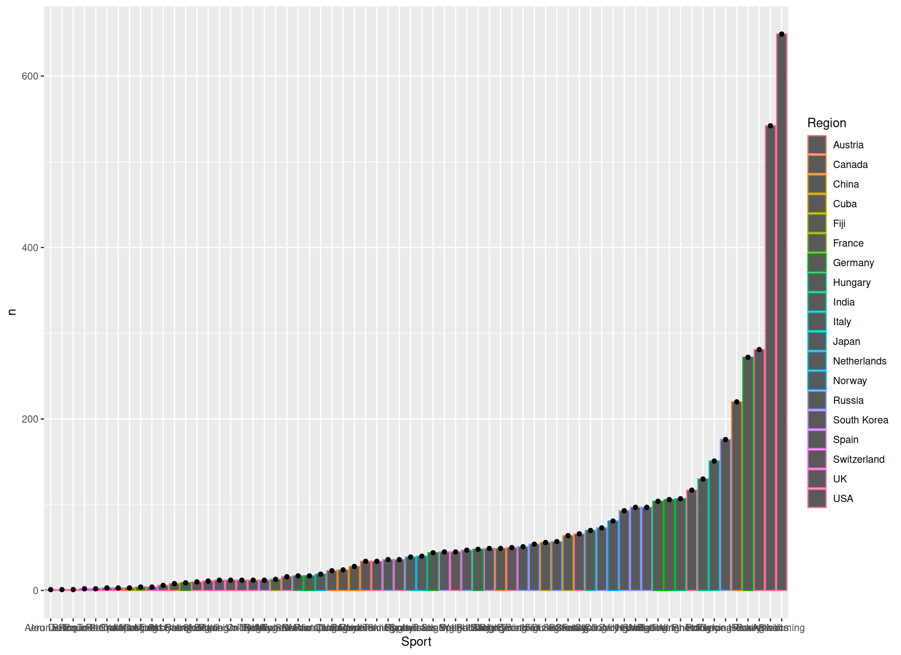
This gives us black points now. But if we define our aesthetics within the ggplot() function, the points have the same colors as the bars, as now the aesthetics apply to all layers:
ggplot(
data = best_by_sport,
aes(
x = reorder(Sport, n),
y = n,
colour = Region
)
) +
geom_col() +
geom_point()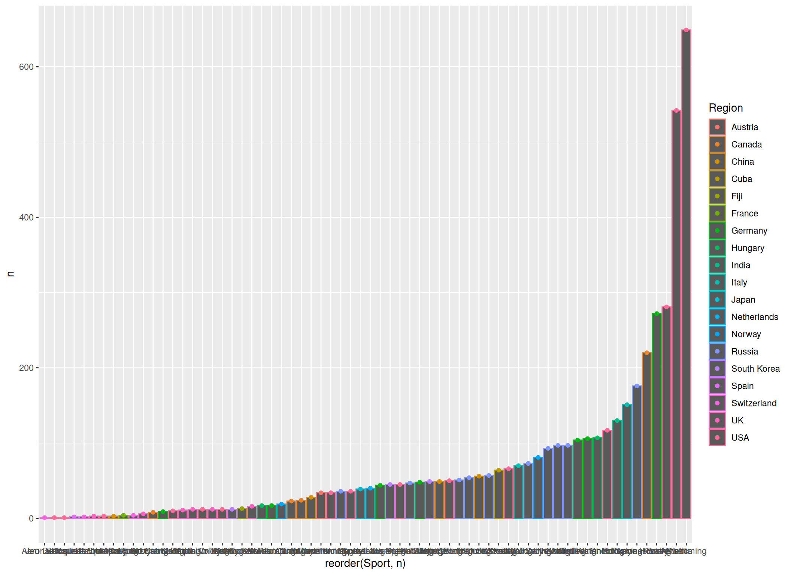
Also note that we layer another geom (geom_point()) over our plot (that’s what I meant earlier on by saying plots consist of different layers).
General plotting options
We can tweak all aspects of the appearance of a plot. For example, we might want to turn the x axis labels by 90 degrees to actually make them readable:
p <- p +
theme(axis.text.x = element_text(angle = 90, vjust = 0.5, hjust = 1))
p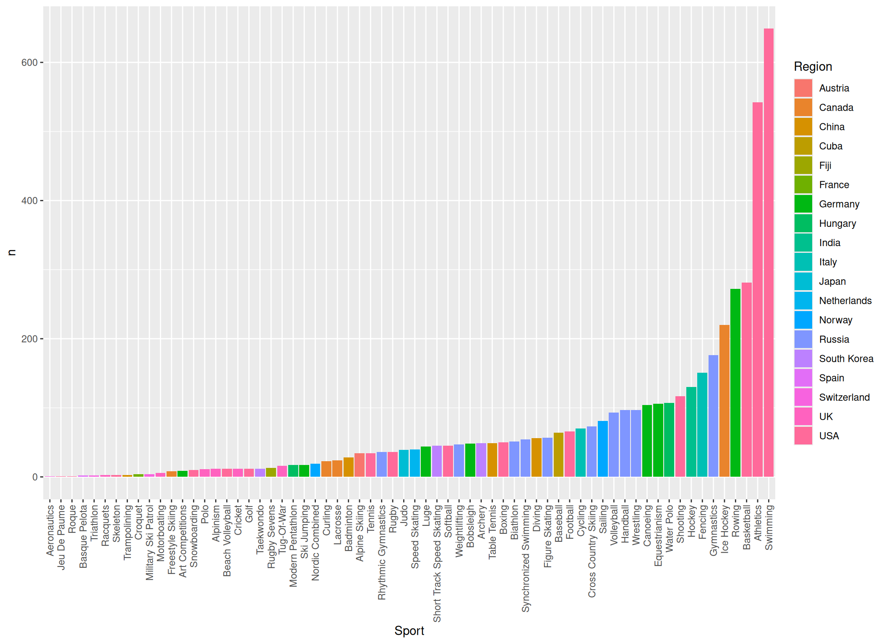
Or we could label the bars with the country:
p <- p +
geom_text(aes(label = Region), hjust = -0.3, angle = 90, size = 2.5)
p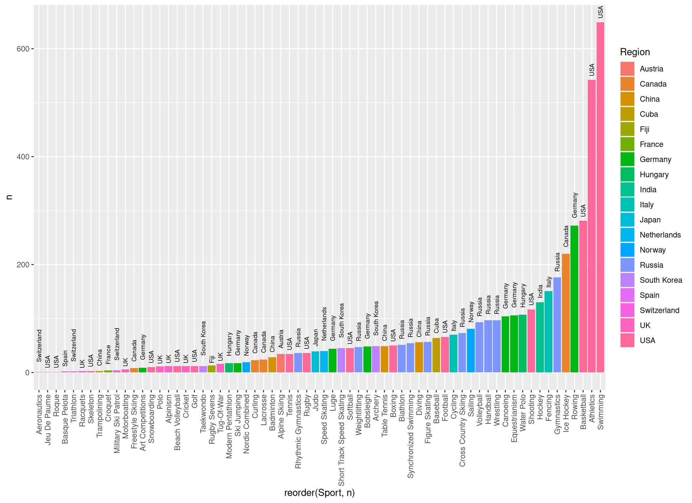
Or use different colors and a different theme:
# install.packages("viridisLite")
p <- p +
theme_classic() +
## And turn the axis labels again, because the new theme has overwritten our theme
theme(axis.text.x = element_text(angle = 90, vjust = 0.5, hjust = 1)) +
## Specify which colors are used for the filling. They are from the package viridsLite, so you might need to install it.
scale_fill_manual(values = viridisLite::viridis(19))
p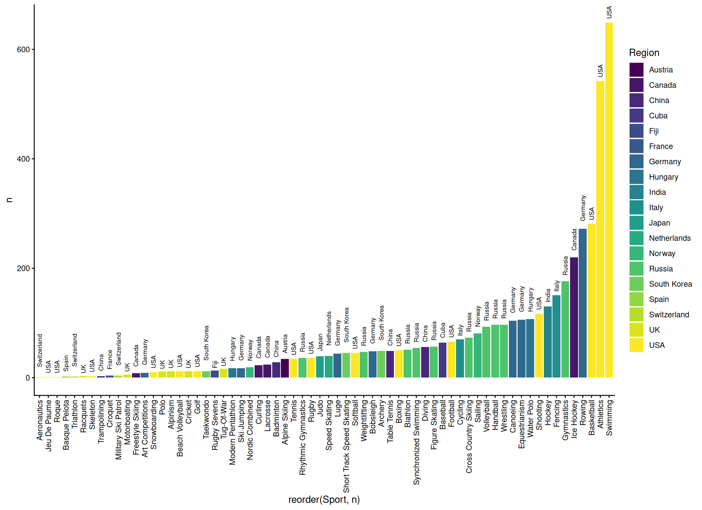
Finally, change the title and axis labels:
p +
ggtitle("Country with the most Olympic gold medal winners by sport") +
xlab("Sport") +
ylab("Number of gold medal winners")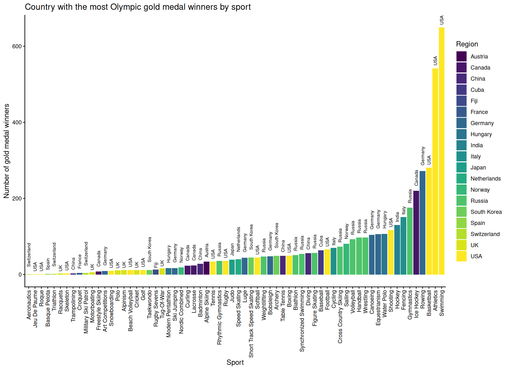
Tip
Of course we don’t have to assign every intermediate step to the p object. Normally, we would just combine all layers by using the +.
Pretty cool! Now we know that the most Olympic Tug-Of-War gold medalists are from the UK! Also note that we are looking at the number of people from each country winning a gold medal, so team sports are counted multiple times.
Second plot
Let’s take a look at a different plot, just to see what can be easily achieved with ggplot2 (and we have prepared the data to do that, so we don’t want to waste the work).
So, let’s build our coordinate system:
p <- ggplot(
data = medal_countries,
mapping = aes(x = long, y = lat, group = group)
)
p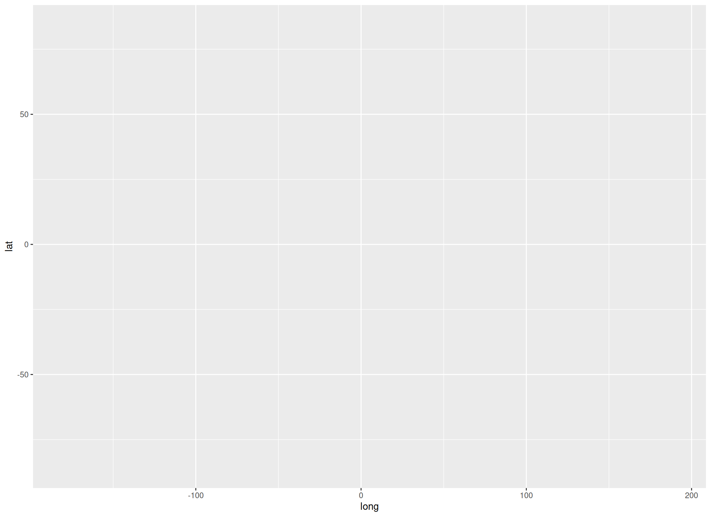
Now we add the map by using the polygon geom:
p <- p +
geom_polygon(aes(fill = n))
p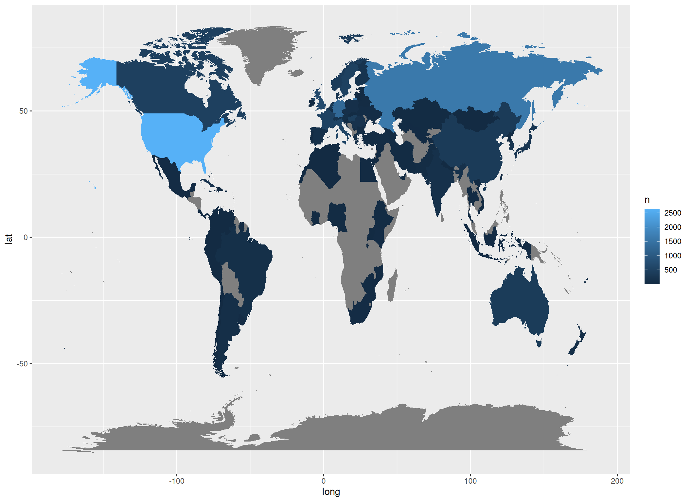
In this case the polygon filling (which are our countries) will change depending on n (the number of gold medalists).
In the end we can clean up the plot by rescaling the x and y axis, provide a new colour scale, titles and theme:
p +
## Rescale the plot
coord_fixed(1.3) +
## Use another colour palette:
scale_fill_distiller(palette = "YlOrBr", direction = 1) +
## Plot title
ggtitle("Olympic Gold Medal winners") +
## Legend title:
guides(fill = guide_legend(title = "Gold medal \n winners")) +
## Minimal theme:
theme_void()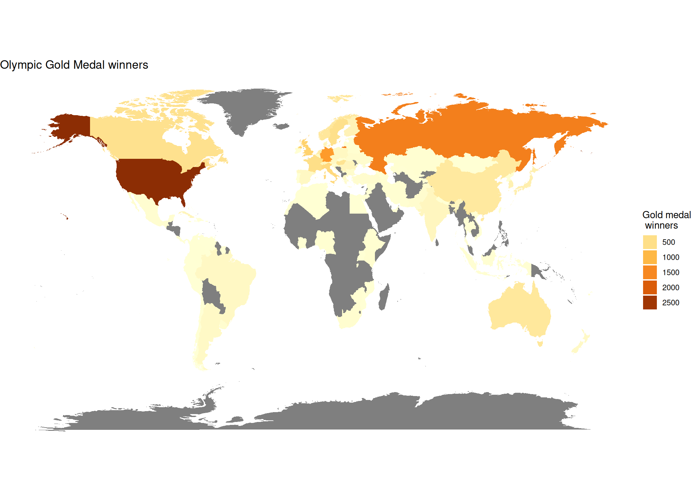
Note that the medals for team sports are counted multiple times, as our data contained the gold medal wins by person, and not by discipline.